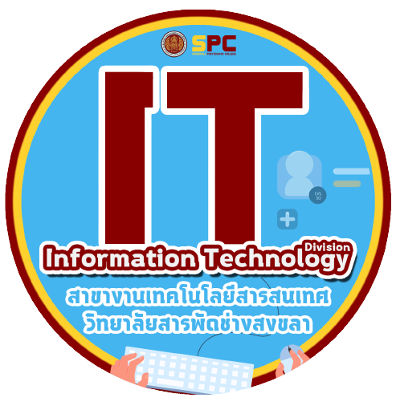

ประวัติทั่วไปโดยสังเขป
สาขาวิชาพาณิชยกรรม เป็นหน่วงานในวิทยาลัยสารพัดช่างสงขลา สังนักงานคณะการกรรมการการอาชีวศึกษากระทรวงศึกษาธิการ เดิมเปิดสอนเฉพาะหลักสูตรระยะสั้น
ต่อมาใน ปี พ.ศ. 2537 กรมอาชีวศึกษา กระทรวงศึกษาธิการ ให้เปิดสอนหลักสูตรประกาศนียบัตรวิชาชีพ (ปวช.) ซึ่งปัจจุบันเปิดสอนหลักสูตร ปวช. ในสาขาวิชาเทคโนโลยีสารสนเทศ
